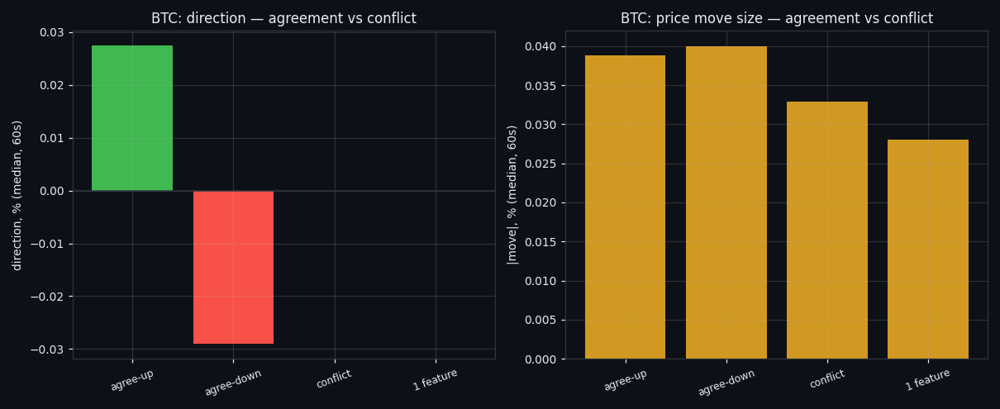
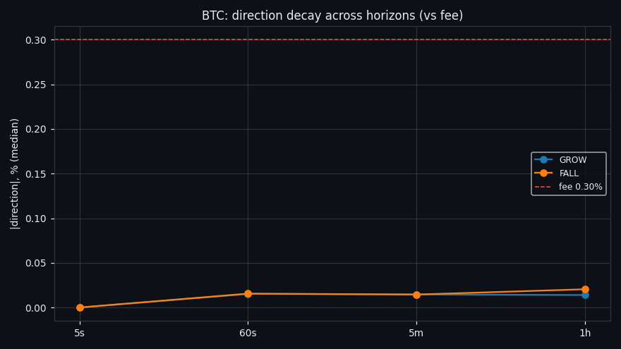
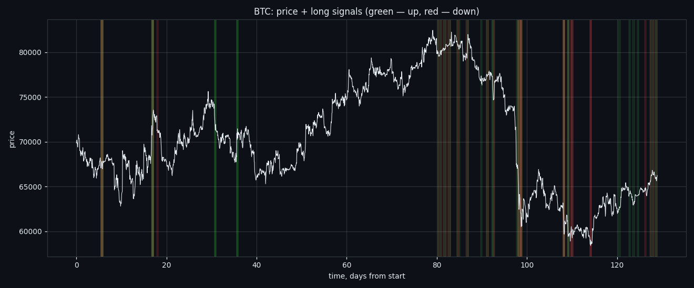

The Alphabet of the Order Book: 6,561 Possible States, 333 Real Ones
We described the order book as a single word: eight features, three states each. Of the 6,561 words that could exist, only 333 ever occur — and when we tested that alphabet out of sample, it described the market well and predicted it poorly.
Full walkthrough — streamed from YouTube.
① A signal is a state of the whole book, not one number
We stopped looking at features one at a time. At every moment each of the 8 order-book features is in one of three states — spike, normal or lull — so the market's condition is an eight-character word. That gives 6,561 possible words, of which only 333 ever actually occur across 12,477 observed windows. The book does not wander freely; it lives in a small corner of its own state space.

② Most of the time, nothing is happening
One word dominates everything: all-normal, every feature quiet at once. It covers 6,351 of 12,477 windows — about 51% of the time — and its forward move is the smallest in the set (median 0.097%, up-share 49%). Any rule that fires on 'the market is doing something' has to first accept that four windows in five, it isn't.
③ What an active state looks like
The most common non-quiet word is `01101111` — 864 windows. Its median absolute move is 0.142% against 0.097% for the quiet state, i.e. roughly ×1.5 more movement, while its up-share sits at 48% — near a coin flip. The pattern repeats at every level of this project: state tells you the amplitude, not the sign.
④ One feature alone versus several at once
An isolated signal is one feature leaving its baseline while the other seven stay normal. They are informative in a narrow way: the strongest directional tilt belongs to executed sell volume (median -0.204%, up-share 18%, n=103), and the largest forward movement to build-up into the buy wall (median 0.250%). When several features fire together the move grows but the direction does not clarify.

⑤ How fast the information dies
Every signal has a shelf life. Measured across horizons 5s, 60s, 5m, 1h, the advantage is concentrated in the first minutes and is gone well before the hour mark — consistent with the volatility studies, where flow-based edge decayed on the same clock.

⑥ The states drawn over price
Rather than trusting the labels, look at them: the state sequence laid directly over BTC price. Long stretches of quiet, bursts where several features light up at once, and the price behaviour around those bursts.

⑦ The honest test: does it survive out of sample?
This is the section that matters. We split the history in half, learned the behaviour of each state on the first part (6,238 windows) and applied it blind to the second (6,239). Direction AUC falls from 0.623 in-sample to 0.554 out-of-sample; the 'will it move at all' model falls from 0.576 to 0.492 — i.e. to a coin flip. And 304 state-words in the test half had never been seen in training at all.\n\nSo the classification is real as a description and weak as a predictor. We publish it because the negative result is the finding: the book's state space is small and legible, but knowing today's word barely improves tomorrow's guess.
⑧ What we take from this
Three things. The market's state space is far smaller than it could be — 333 words out of 6,561. Quiet dominates, so any live rule spends most of its time doing nothing. And the part that survives out of sample is amplitude, never direction — the same boundary we hit from every other angle in this project.\n\n_Research, not financial advice._
If this changed how you read the tape, the natural next step is Volume Is the Fuel — Not the Steering Wheel — We recorded the Binance order book every second for six coins over five months and ran eighteen tests on what volume really does.
Volume Is the Fuel — Not the Steering Wheel
We recorded the Binance order book every second for six coins over five months and ran eighteen tests on what volume really does.
About Market Research Lab — What We Collect and Why
Most market commentary is storytelling.
From Calm to Calm: a Standard for What Counts as a Signal (BTC)
We stopped defining market signals with a stopwatch.
The Wall That Goes Quiet: What Resting Liquidity Predicts
We measured resting limit liquidity sitting on both sides of the book second by second across six coins, and asked the only question that matters:….
Comments
Discussion is powered by GitHub. Enable it by adding secrets/giscus.json (repo IDs from giscus.app).